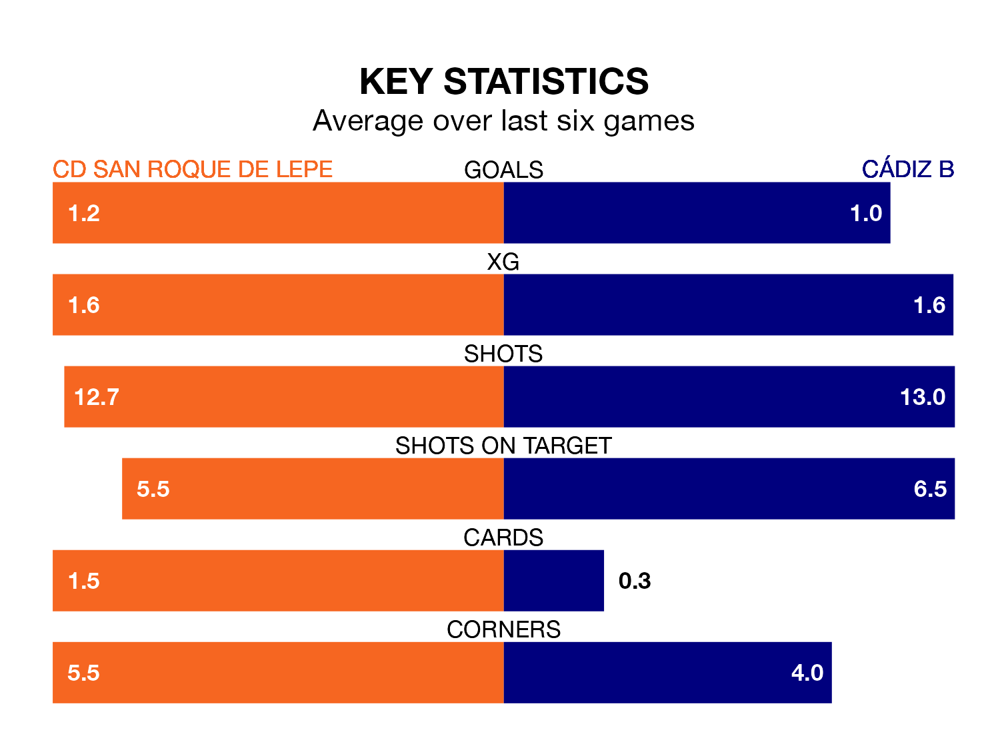

CD San Roque de Lepe host Cádiz B on Sunday at the Estadio Municipal Ciudad de Lepe in the Segunda División RFEF Group 4.
In their last league match, on March 2, San Roque de Lepe lost to Union Estepona CF 3-1 away, with their goal scored by Juan Villar Vázquez.
Cádiz B won, 3-0 at home against Racing Cartagena MM on March 3, with, Adrián Miranda Nieto and Luis Morales Arboleda on the scoresheet.
With 28 goals in 25 games so far this season, Cádiz B are scoring more than average in the league with 1.1 goals per game. But they are conceding more than average too, letting in 31 goals at a rate of 1.2 per game.
San Roque de Lepe, meanwhile, are average scorers, with 1.0 goal per game. They have conceded 1.1 goals per game.
In the last 10 years, San Roque de Lepe and Cádiz B have played each other on seven occasions. Cádiz B won four of them and they drew three times.
On average, San Roque de Lepe scored 0.4 goals and Cádiz B 1.3 in those matches.
Their last meeting was on October 28, when Cádiz B won 2-1 at home.
The home team are 14th in the table after 25 games, of which they have won seven and drawn six, earning 27 points.
The visitors are four places ahead of San Roque de Lepe in 10th, with seven wins and 10 draws putting them on 31 points.
San Roque de Lepe are in mixed form in the Segunda División RFEF Group 4, with three wins and a draw from their last six games.
With a win and four draws over that period, Cádiz B's form is worse – they have taken seven points from 18, compared to the hosts' 10.
Updated: 09:34 (UTC), 08/03/24